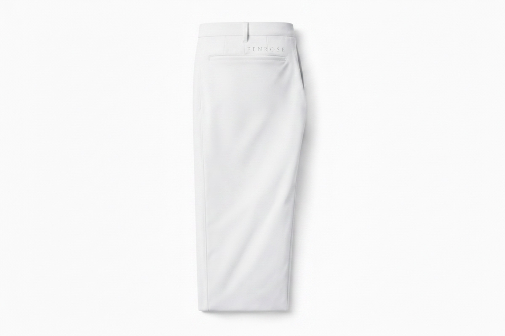
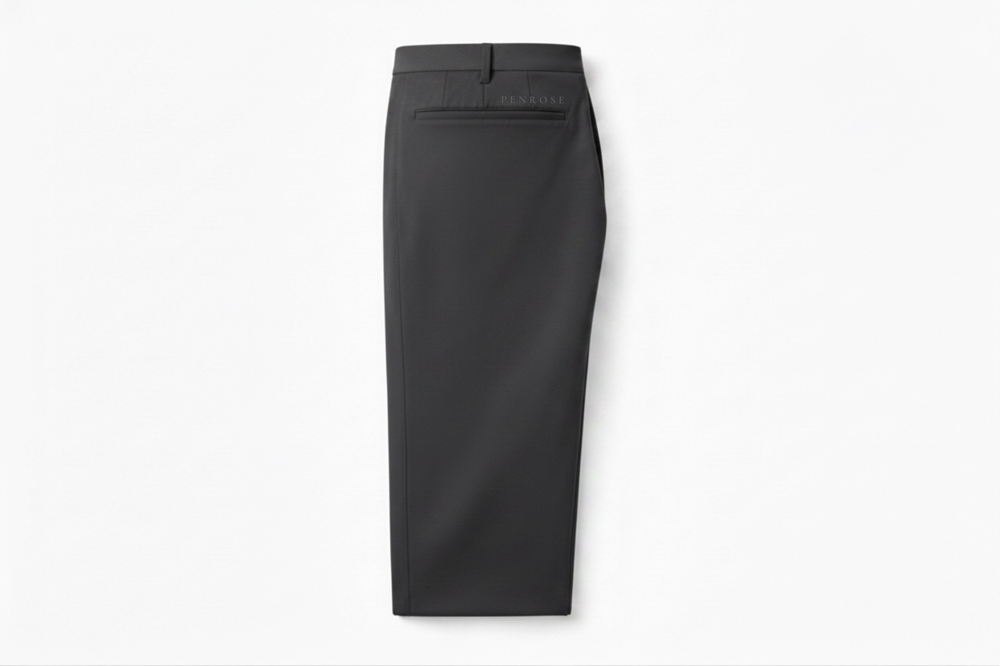
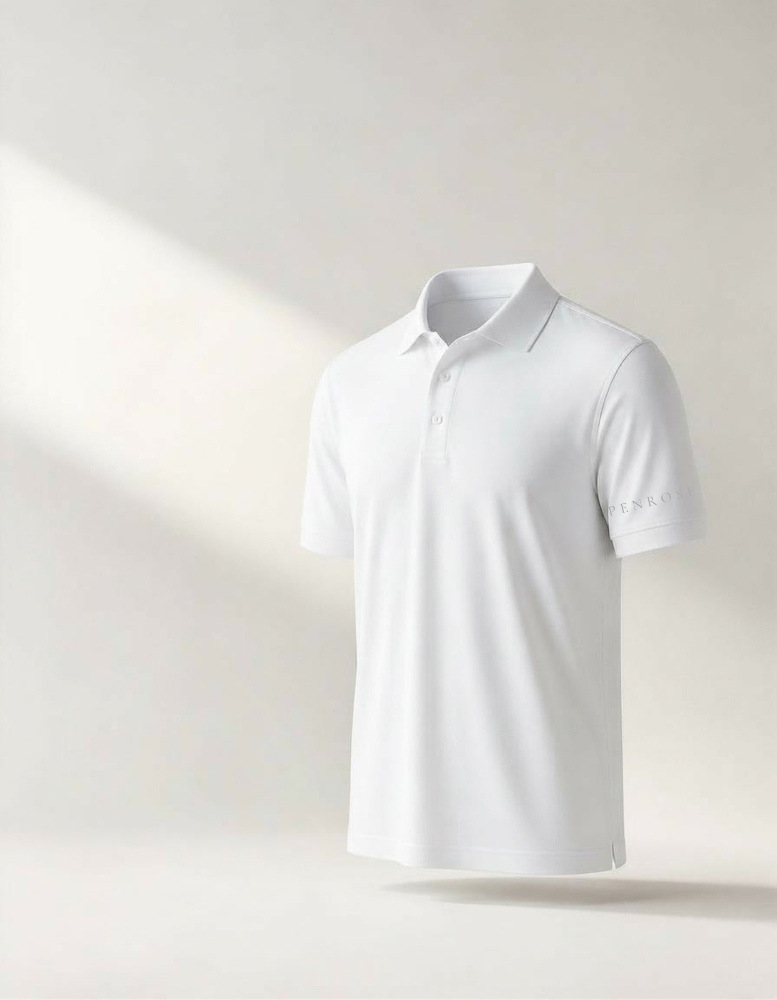
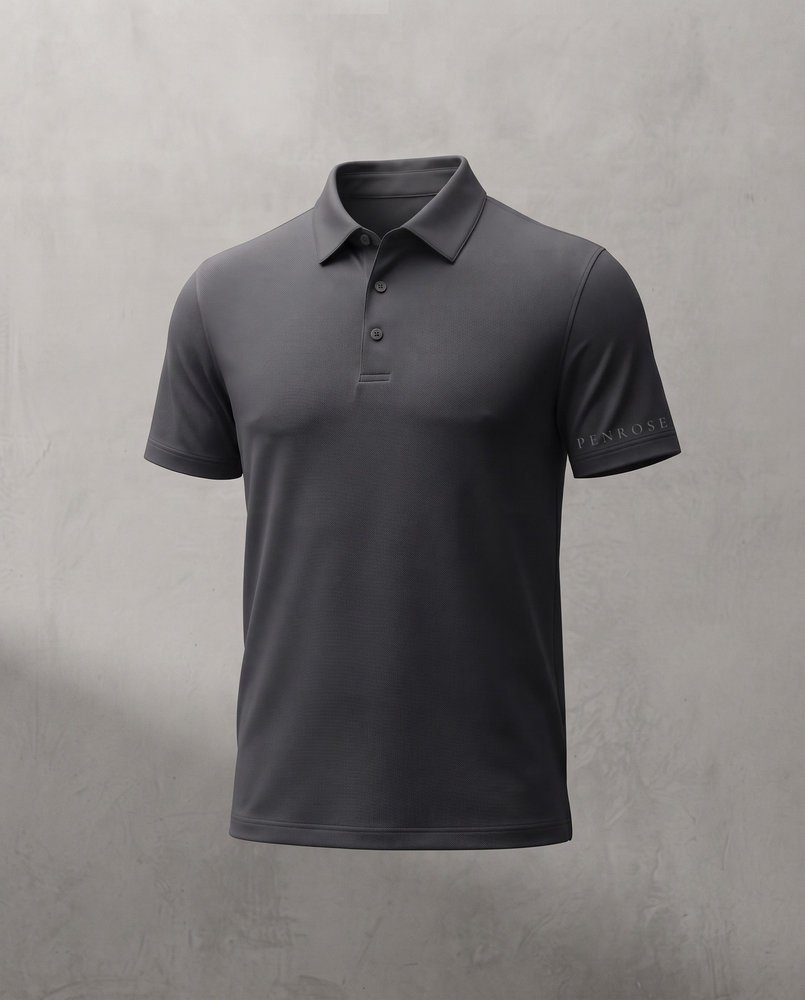

A performance wardrobe without the performance uniform.
Penrose creates clothing engineered for movement and considered for everything that follows the round.
Designed on the coast. Made for the entire day.
The First Edition
One wardrobe.
One wardrobe.
From the first tee to everything after.
A complete look — polo, trouser, cap — in one cohesive line.
Opening March 2027
The First Edition
Opening March 2027
Colorway




The Performance Polo
The foundational layer.
The Tailored Performance Trouser
A clean line, day into evening.
The Penrose Cap
A quiet finish to the wardrobe.
Engineered for movement. Cut for everything after.
A performance polo shaped with restraint, made to move through the round and remain appropriate beyond it.
Invisible at three feet. Discovered at close range.
The mark lives where it is found — not announced.
Protection without interruption.
A layer designed for changing conditions and the hours beyond them.
The Quarter-Zip / True White
Between the coastline and the first tee.
Designed with the restraint of the coast and the precision of the game.
Detail
Engineered where the game is played.
The day continues.
Opening March 2027
The First Edition arrives March 2027.
Join the private list for collection previews, release details, and first access.